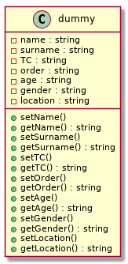
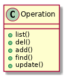

Kalas Kargo Proje Raporu
Table of Contents
1 Giriş
- Bu projede, "Kalas Kargo" adlı bir kargo şirketinin, Kuryelerin şahsi bilgileri ve teslimatını yapacakları ürünlerin bilgileri kayıt edilir.
- Kayıt edilen bilgiler sırasıyla;
- TC kimlik numarası
- İsim
- Soy İsim
- Yaş
- Kuryenin taşıdığı ürün (Sipariş)
- Cinsiyet
- Tesliman noktası
2 Kullanım
- Kullanıcı Programı açtığında, karşısına şirketin adı ve altında sıralanmış işlem seçenekleri sunulur
- Bu seçenekleri seçmek için, başında bulunan numaraların yazılıp
Entertuşuna basılması gerekir - Seçenekler kullanıcıyı adım adım yönlendirme özelliğine sahiptir.
3 Programın iç yapısı
- Proje içinde 2 temel dosya bulunur;
- main.cpp
- database.txt
3.1 database.txt
- Kalas Kargo'nun Kurye bilgilerinin kayıt edildiği dosya
- Program her işlemde bu dosyayı modifiye eder
3.2 main.cpp
- Program temelde 4 class'dan oluşur
- Carrier (kurye)
- UserInterface (Kullanıcı arayüzü)
- Operation (işlem)
- Automation (otomasyon)
3.2.1 Classlar ve Açıklamaları
- Carrier
- Kuryenin bütün bilgilerinin ve metodlarının bulunduğu klastır
Yapısı:

- UserInterface
- Kullanıcının programla olan etkileşimini sağlayan klastır
Yapısı:

- Operation
- database.txt dosyasında değişiklik yapan klastır
Yapısı:

- Automation
- Carrier, UserInterface, Operati klaslarının tek çatı altında birleştiği klastır
Yapısı